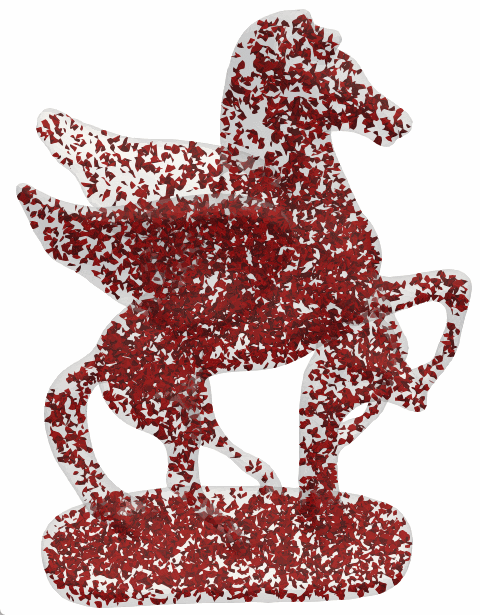
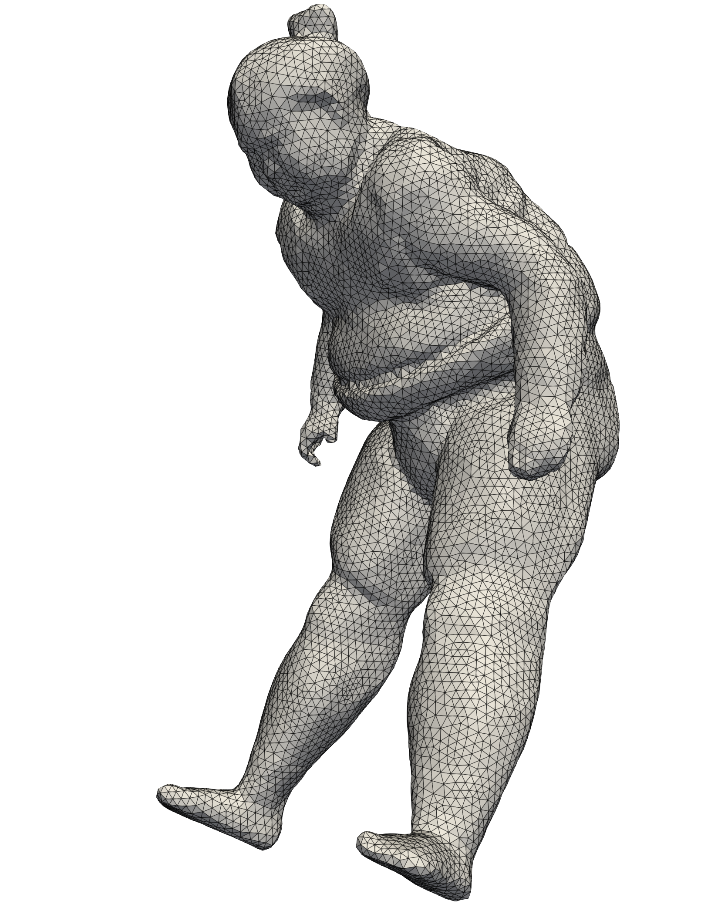
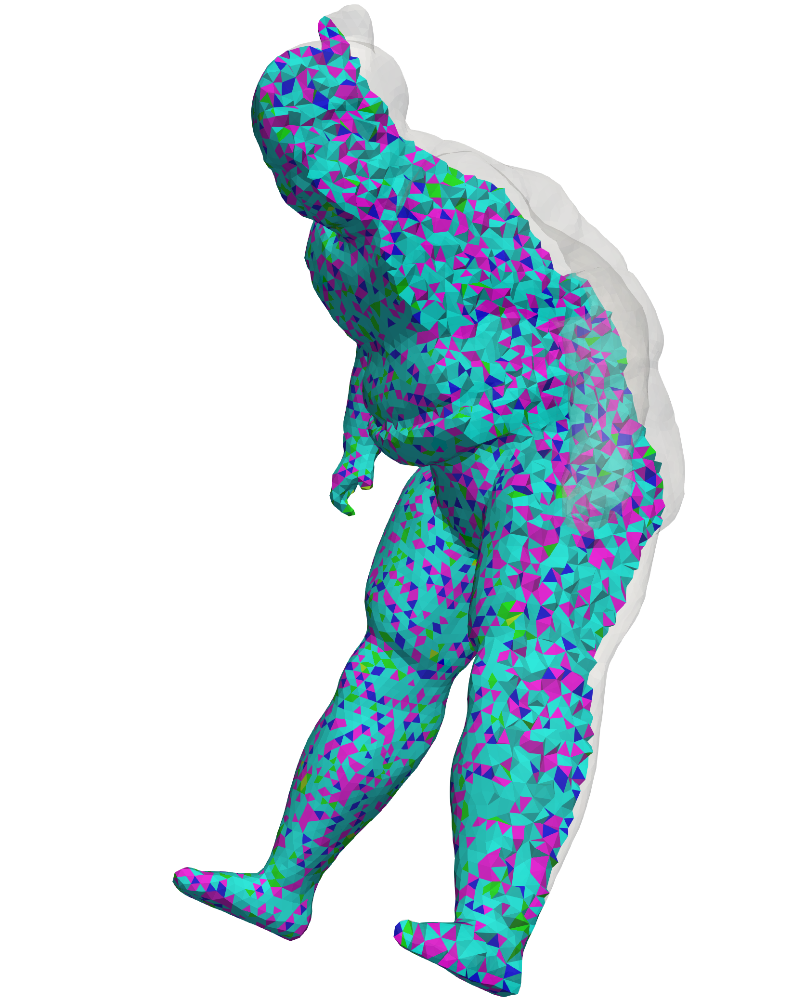
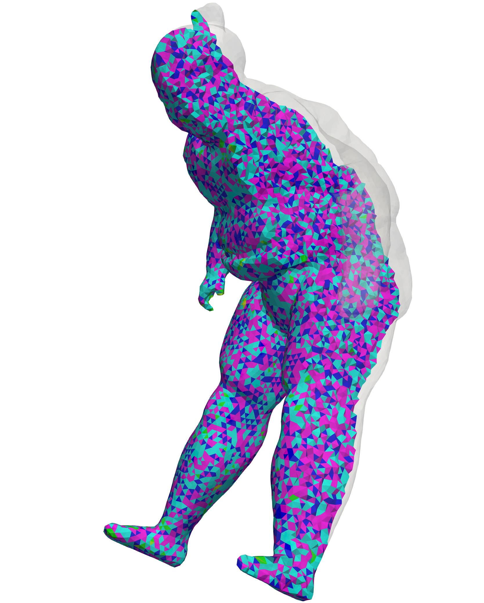
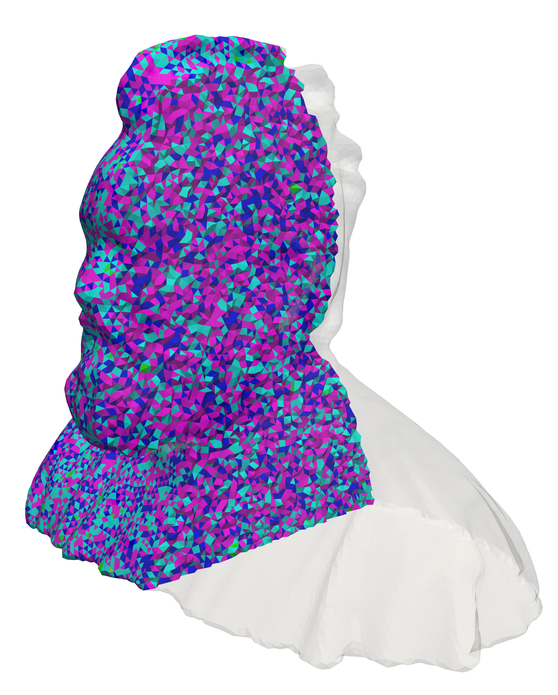

- Kaixin Yu*1,2
- Yifu Wang*1
- Peng Song3
- Xiangqiao Meng4
- Ying He2†
- Jianjun Chen1†
- 1 School of Aeronautics and Astronautics, Zhejiang University, Hangzhou, China.
- 2 College of Computing and Data Science, Nanyang Technological University, Singapore.
- 3 Pillar of Information Systems Technology and Design, Singapore University of Technology and Design, Singapore.
- 4 Department of Computing, The Hong Kong Polytechnic University, Hong Kong, China.
Abstract
This paper presents a new algorithm, Weighted Squared Volume Minimization (WSVM), for generating high-quality tetrahedral meshes from closed triangle meshes.
Drawing inspiration from the principle of minimal surfaces that minimize squared surface area, WSVM employs a new energy function integrating weighted squared volumes for tetrahedral elements.
When minimized with constant weights, this energy promotes uniform volumes among the tetrahedra. Adjusting the weights to account for local geometry further achieves uniform dihedral angles within the mesh.
The algorithm begins with an initial tetrahedral mesh generated via Delaunay tetrahedralization and proceeds by sequentially minimizing volume-oriented and then dihedral angle-oriented energies.
At each stage, it alternates between optimizing vertex positions and refining mesh connectivity through the iterative process.
The algorithm operates fully automatically and requires no parameter tuning.
Evaluations on a variety of 3D models demonstrate that WSVM consistently produces tetrahedral meshes of higher quality, with fewer slivers and enhanced uniformity compared to existing methods.
The change of tetrahedra with minimum dihedral angles less than 30 degrees during optimization.

Quality comparison between the input model, the initial tetrahedral mesh, and the optimized results of WSVM (with quality values, where 0 is best)




Comparison Method

More results